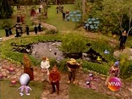
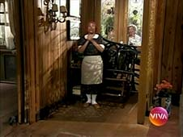
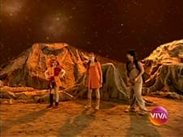
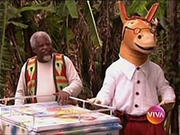
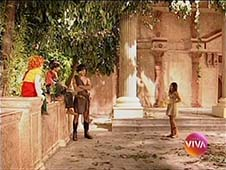

Sítio do Picapau Amarelo
| EPISÓDIO | EXIBIÇÃO | REPRISE | |||
|---|---|---|---|---|---|
| 1ª TEMPORADA - ANO 1 - 2001 | |||||
| 001 | 1x01 |  |
"Reino Das Águas Claras" 1º episódio |
12/10/2001 | 19/05/2010 |
| 002 | 1x02 |  |
"Reino Das Águas Claras" 2º episódio |
15/10/2001 | 20/05/2010 |
| 003 | 1x03 | "Reino Das Águas Claras" 3º episódio |
16/10/2001 | 21/05/2010 | |
| 004 | 1x04 |  |
"Reino Das Águas Claras" 4º episódio |
17/10/2001 | 24/05/2010 |
| 005 | 1x05 | "Reino Das Águas Claras" 5º episódio |
18/10/2001 | 25/05/2010 | |
| 006 | 1x06 |  |
"Reino Das Águas Claras" 6º episódio O Viva exibiu uma versão da história recomposta em 5 capítulos. |
19/10/2001 | - |
| 007 | 1x07 |  |
"O Saci" 1º episódio |
22/10/2001 | 26/05/2010 |
| 008 | 1x08 | "O Saci" 2º episódio O feitiço de Cuca transforma Narizinho em pedra. |
23/10/2001 | 27/05/2010 | |
| 009 | 1x09 |  |
"O Saci" 3º episódio O lobisomem aterroriza Saci e Pedrinho. |
24/10/2001 | 28/05/2010 |
| 010 | 1x10 |  |
"O Saci" 4º episódio |
25/10/2001 | 31/05/2010 |
| 011 | 1x11 | "O Saci" 5º episódio Primeira aparição da personagem Iara. |
26/10/2001 | 01/06/2010 | |
| 012 | 1x12 | "Caçadas de Pedrinho" 1º episódio |
29/10/2001 | 02/06/2010 | |
| 013 | 1x13 | "Caçadas de Pedrinho" 2º episódio |
30/10/2001 | 03/06/2010 | |
| 014 | 1x14 | "Caçadas de Pedrinho" 3º episódio |
31/10/2001 | 04/06/2010 | |
| 015 | 1x15 | "Caçadas de Pedrinho" 4º episódio |
01/11/2001 | 07/06/2010 | |
| 016 | 1x16 | "Caçadas de Pedrinho" 5º episódio |
02/11/2001 | 08/06/2010 | |
| 017 | 1x17 |  | "Reinações de Narizinho" 1º episódio |
05/11/2001 | 09/06/2010 |
| 018 | 1x18 |  | "Reinações de Narizinho" 2º episódio |
06/11/2001 | 10/06/2010 |
| 019 | 1x19 | "Reinações de Narizinho" 3º episódio |
07/11/2001 | 11/06/2010 | |
| 020 | 1x20 | "Reinações de Narizinho" 4º episódio Miss Sardine pula na frigideira e morre frita. |
08/11/2001 | 14/06/2010 | |
| 021 | 1x21 | "Reinações de Narizinho" 5º episódio |
09/11/2001 | 15/06/2010 | |
| 022 | 1x22 | "Viagem ao País das Fábulas" 1º episódio |
12/11/2001 | 16/06/2010 | |
| 023 | 1x23 | "Viagem ao País das Fábulas" 2º episódio |
13/11/2001 | 17/06/2010 | |
| 024 | 1x24 | "Viagem ao País das Fábulas" 3º episódio |
14/11/2001 | 18/06/2010 | |
| 025 | 1x25 | "Viagem ao País das Fábulas" 4º episódio |
15/11/2001 | 21/06/2010 | |
| 026 | 1x26 | "Viagem ao País das Fábulas" 5º episódio |
16/11/2001 | 22/06/2010 | |
| 027 | 1x27 | "Festa do Faz de Conta" 1º episódio |
19/11/2001 | 23/06/2010 | |
| 028 | 1x28 | "Festa do Faz de Conta" 2º episódio |
20/11/2001 | 24/06/2010 | |
| 029 | 1x29 | "Festa do Faz de Conta" 3º episódio |
21/11/2001 | 25/06/2010 | |
| 030 | 1x30 | "Festa do Faz de Conta" 4º episódio |
22/11/2001 | 28/06/2010 | |
| 031 | 1x31 | "Festa do Faz de Conta" 5º episódio |
23/11/2001 | 29/06/2010 | |
| 032 | 1x32 | "Viagem ao Céu" 1º episódio |
26/11/2001 | 30/06/2010 | |
| 033 | 1x33 |  | "Viagem ao Céu" 2º episódio |
27/11/2001 | 01/07/2010 |
| 034 | 1x34 | "Viagem ao Céu" 3º episódio Narizinho, Emília e Conselheiro descobrem um anjinho com a asa quebrada. |
28/11/2001 | 02/07/2010 | |
| 035 | 1x35 | "Viagem ao Céu" 4º episódio De volta ao Sítio, Emília monopoliza as atenções do anjo Flor Das Alturas. |
29/11/2001 | 05/07/2010 | |
| 036 | 1x36 | "Viagem ao Céu" 5º episódio Flor Das Alturas voa de volta para o céu. Emília tenta evitar, mas é impedida por Tia Nastácia. A boneca demonstra que também é capaz de sofrer. |
30/11/2001 | 06/07/2010 | |
| 037 | 1x37 | "A Reforma da Natureza - Parte 1" 1º episódio |
03/12/2001 | 07/07/2010 | |
| 038 | 1x38 |  |
"A Reforma da Natureza - Parte 1" 2º episódio Cuca arma cilada para Pedrinho, Rabicó e Narizinho. A bruxa os torna reféns na caverna. |
04/12/2001 | 08/07/2010 |
| 039 | 1x39 | "A Reforma da Natureza - Parte 1" 3º episódio |
05/12/2001 | 09/07/2010 | |
| 040 | 1x40 | "A Reforma da Natureza - Parte 1" 4º episódio |
06/12/2001 | 12/07/2010 | |
| 041 | 1x41 | "A Reforma da Natureza - Parte 1" 5º episódio |
07/12/2001 | 13/07/2010 | |
| 042 | 1x42 | "A Reforma da Natureza - Parte 2" 1º episódio |
10/12/2001 | 14/07/2010 | |
| 043 | 1x43 | "A Reforma da Natureza - Parte 2" 2º episódio |
11/12/2001 | 15/07/2010 | |
| 044 | 1x44 | "A Reforma da Natureza - Parte 2" 3º episódio |
12/12/2001 | 16/07/2010 | |
| 045 | 1x45 |  |
"A Reforma da Natureza - Parte 2" 4º episódio |
13/12/2001 | 19/07/2010 |
| 046 | 1x46 | "A Reforma da Natureza - Parte 2" 5º episódio |
14/12/2001 | 20/07/2010 | |
| E01 | "A Festa da Cuca" Especial de fim de ano participação especial Malu Mader, Raul Cortez e Reynaldo Gianechinni |
26/12/2001 | 26/12/2010 | ||
| 1ª TEMPORADA - ANO 2 - 2002 | |||||
| 047 | 1x47 | "O Picapau Amarelo - Parte 1" 1º episódio |
18/02/2002 | 21/07/2010 | |
| 048 | 1x48 | "O Picapau Amarelo - Parte 1" 2º episódio |
19/02/2002 | 22/07/2010 | |
| 049 | 1x49 | "O Picapau Amarelo - Parte 1" 3º episódio |
20/02/2002 | 23/07/2010 | |
| 050 | 1x50 | "O Picapau Amarelo - Parte 1" 4º episódio |
21/02/2002 | 26/07/2010 | |
| 051 | 1x51 | "O Picapau Amarelo - Parte 1" 5º episódio |
22/02/2002 | 27/07/2010 | |
| 052 | 1x52 | "O Picapau Amarelo - Parte 2" 1º episódio |
25/02/2002 | 28/07/2010 | |
| 053 | 1x53 | "O Picapau Amarelo - Parte 2" 2º episódio |
26/02/2002 | 29/07/2010 | |
| 054 | 1x54 | "O Picapau Amarelo - Parte 2" 3º episódio |
27/02/2002 | 30/07/2010 | |
| 055 | 1x55 | "O Picapau Amarelo - Parte 2" 4º episódio Obs.: A partir desse episódio, o horário principal da reprise torna-se 13h. |
28/02/2002 | 02/08/2010 | |
| 056 | 1x56 | "O Picapau Amarelo - Parte 2" 5º episódio |
01/03/2002 | 03/08/2010 | |
| 057 | 1x57 | "Dom Quixote das Crianças" 1º episódio |
04/03/2002 | 04/08/2010 | |
| 058 | 1x58 |  | "Dom Quixote das Crianças" 2º episódio |
05/03/2002 | 05/08/2010 |
| 059 | 1x59 | "Dom Quixote das Crianças" 3º episódio |
06/03/2002 | 06/08/2010 | |
| 060 | 1x60 | "Dom Quixote das Crianças" 4º episódio Ênio, valendo-se de Dom Quixote, ataca Conselheiro, Quindim e Rabícó. |
07/03/2002 | 09/08/2010 | |
| 061 | 1x61 | "Dom Quixote das Crianças" 5º episódio |
08/03/2002 | 10/08/2010 | |
| 062 | 1x62 | "O Minotauro" 1º episódio O Minotauro rapta Tia Nastácia. |
11/03/2002 | 11/08/2010 | |
| 063 | 1x63 | "O Minotauro" 2º episódio Cuca fica resfriada. |
12/03/2002 | 12/08/2010 | |
| 064 | 1x64 | "O Minotauro" 3º episódio |
13/03/2002 | 13/08/2010 | |
| 065 | 1x65 | "O Minotauro" 4º episódio Emília, Pedrinho e Visconde chegam ao Labirinto de Creta. |
14/03/2002 | 16/08/2010 | |
| 066 | 1x66 | "O Minotauro" 5º episódio |
15/03/2002 | 17/08/2010 | |
| 067 | 1x67 | "Memórias de Emília" 1º episódio Dona Benta acolhe um homem misterioso em sua casa. |
18/03/2002 | 18/08/2010 | |
| 068 | 1x68 | "Memórias de Emília" 2º episódio |
19/03/2002 | 19/08/2010 | |
| 069 | 1x69 | "Memórias de Emília" 3º episódio O hóspede misterioso saqueia o cofre de Dona Benta. |
20/03/2002 | 20/08/2010 | |
| 070 | 1x70 | "Memórias de Emília" 4º episódio Narizinho e Pedrinho descobrem que Mário é um assaltante foragido. |
21/03/2002 | 23/08/2010 | |
| 071 | 1x71 | "Memórias de Emília" 5º episódio Os primos armam uma cilada para Mário. |
22/03/2002 | 24/08/2010 | |
| 072 | 1x72 | "OS XII Trabalhos de Hércules - Parte 1" 1º episódio |
25/03/2002 | 25/08/2010 | |
| 073 | 1x73 | "OS XII Trabalhos de Hércules - Parte 1" 2º episódio |
26/03/2002 | 26/08/2010 | |
| 074 | 1x74 | "OS XII Trabalhos de Hércules - Parte 1" 3º episódio |
27/03/2002 | 27/08/2010 | |
| 075 | 1x75 | "OS XII Trabalhos de Hércules - Parte 1" 4º episódio |
28/03/2002 | 30/08/2010 | |
| 076 | 1x76 |  | "OS XII Trabalhos de Hércules - Parte 1" 5º episódio |
29/03/2002 | 31/08/2010 |